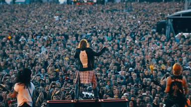
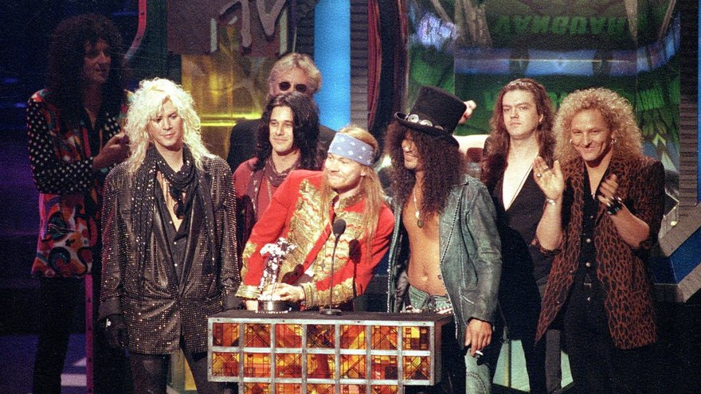

Concierto de la banda con Una multitud

Guns N' Roses es una banda estadounidense de hard rock formada en Hollywood en la zona de Sunset Strip, alrededor de Santa Mónica, en el área metropolitana de Los Ángeles, California en 1985. El grupo fue fundado por el vocalista Axl Rose y el guitarrista Izzy Stradlin.
Es una de las bandas de rock más exitosas de todos los tiempos, habiendo vendido más de ciento cincuenta millones de discos, es considerada ícono global de la música y forma parte del prestigioso Salón de la Fama del Rock and Roll. Asimismo, la banda es uno de los números artísticos con más galardones, legado y repercusión mundial hasta la fecha. También Guns N' Roses es considerada una de las bandas más influyentes de la historia debido a su gran legado musical.De igual forma en el año 2011 fueron posicionados en el puesto 21 en la lista de "los 100 mejores artistas de la historia",10 elaborada por la revista Rolling Stone en conjunto con diversos productores y críticos musicales.
La formación actual cuenta con el vocalista Axl Rose, el guitarrista rítmico Richard Fortus, los tecladistas Dizzy Reed y Melissa Reese, el baterista Frank Ferrer, el bajista Duff McKagan y el guitarrista líder Slash. Estos dos últimos son considerados miembros clásicos de la agrupación y luego de una ausencia de 23 años, retomaron su lugar en la banda. La banda ha vendido más de 150 millones de álbumes en todo el mundo,incluyendo más de 60 millones de álbumes solo en los Estados Unidos,16 lo que los posiciona en el puesto n°18 en la lista de los artistas con más ventas y éxito de todos los tiempos. Su álbum debut Appetite for Destruction de 1987 ha vendido 35 millones de copias a nivel mundial y alcanzó el número 1 en el Billboard 200 en Estados Unidos. Además, cuatro canciones del álbum ingresaron en el Top 10 en la Billboard Hot 100, y «Sweet Child o' Mine» quedó en el número uno.